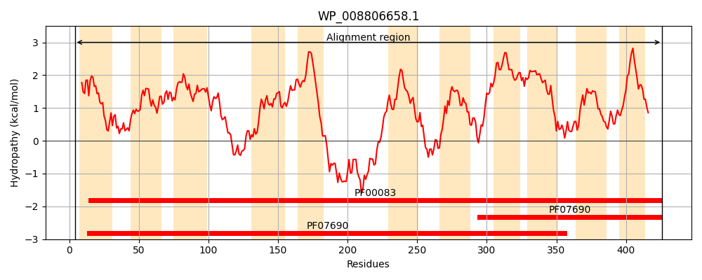
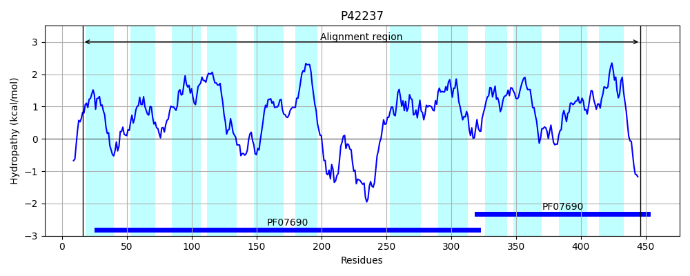
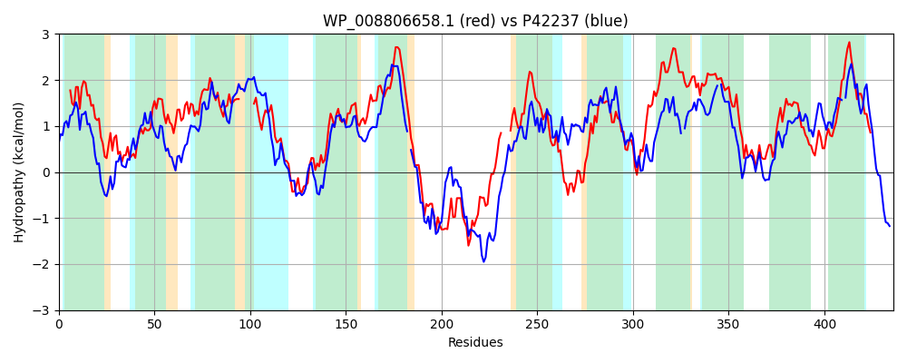

Hit Accession: P42237
Hit TCID: 2.A.1.14.1
Hit Description: gnl|BL_ORD_ID|10449 gnl|TC-DB|P42237|2.A.1.14.1 Probable glucarate transporter (D-glucarate permease) - Bacillus subtilis.
Mach Len: 436
e:0.000000
Query TMS Count : 11
Hit TMS Count: 12
TMS-Overlap Score: 8.850000
Predicted Substrates:CHEBI:14311;glucarate(2-)
BLAST Alignment:
Score: 582 , Bit scores: 228 bits, E-value: 2.5e-70, Alignment length: 436, Percentage identity: 31
Query: 4 NIRWIIVLLLFLVYMINYLDRVALSITVPMIEKDLALNAEQFGMIFGSFFFGYAVFNFIGGLAVDKFGATLVMGLAVGLWSLFCGLTAVATGFYS-------MLVLRVLFGMAEGPICASANKMINGWFPKKQAATAVGFLSAGSPLGGAVAGPIVGYLALAFGWRPAFMIIFAIGIVWMVVWFFIAANSPDKHKHVSQEELMLINKMKQEEDALETVENQTAHSLGYYLKQ----PIILVTAFAFFCYNYILFFFLSWFPSYLVQQHHLDIKQMSLTTMIPWIVGFVGLALGGYISDKIFNLTGRLLLSRKIVLVVCLLMAALCVGLAGTVSSVVPAVLLMSVSIFFLYVTGAIYWAIIQDVVHKSRVGGASGFIHLIGSVSGIVGPIVTGYIVQSTGKFDSAFILAGTIAALGAVLVLLVIKTP--RMTMKASQ 426
++RW IV +LFLV INY DR LSIT ++ DL L++ G +F +F + Y + GG +D+FG+ ++ L++ WS F L A GF+S + LR L G++E P +++ WFP + TA F ++ + P++G+L +FGW F+++ GI+ V+W P KH V++ EL I + ++ Q S Y+KQ +++ A +C + +FFL+WFP YLVQ + I + +P + GF G LGG +SD + L +RK+ ++ +L++ + + S V++MS++ FF GA+ WA++ D K G + G + G+++ I PI+ GYIV +TG F+ A + G A+ A+L L++ P R+ +K +
Sbjct: 16 SVRWFIVFMLFLVTSINYADRATLSITGDSVQHDLGLDSVAMGYVFSAFGWAYVIGQLPGGWLLDRFGSKTIIALSIFFWSFFT-LLQGAIGFFSAGTAIILLFALRFLVGLSEAPSFPGNGRVVASWFPSSERGTASAFFNSAQYFAIVIFSPLMGWLTHSFGWHSVFVVMGIAGILLAVIW-LKTVYEPKKHPKVNEAELAYIEQGGGLISMDDSKSKQETESKWPYIKQLLTNRMLIGVYIAQYCITTLTYFFLTWFPVYLVQARGMSILEAGFVASLPALCGFAGGVLGGIVSDILLKKGRSLTFARKVPIIAGMLLSCSMI-VCNYTDSAWLVVVIMSLA-FFGKGFGALGWAVVSDTSPKECAGLSGGLFNTFGNIASITTPIIIGYIVNATGSFNGALVFVGA-NAIAAILSYLLLVGPIKRVVLKKQE 446 | Protein Hydropathy Plots: |
|---|
|  |  |
Pairwise Alignment-Hydropathy Plot:
|
|---|
|  |